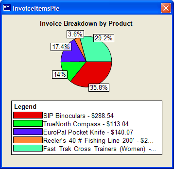

Creating the InvoiceItemsPie Form
The InvoiceItemsPie form demonstrates the use of the charting capability added to Alpha Anywhere. A SimpleChart ActiveX control allows you to place bar and pie charts onto forms and control their properties with Xbasic.
To create a form similar to the InvoiceItemsPie form:
Display the Forms tab of the Control Panel.
Click New.
Select the "Invoice_Items" table from the list on the New Form dialog.
Click Next >.
Select the Blank Form radio button and click Next >.
Select the stylesheet you want to use and click Next >.
Click Finish.
Resize the Form Editor window to fit the chart you wish to create.
Click
 , enter the name of the new form into the Save
Form As dialog, and click OK.
, enter the name of the new form into the Save
Form As dialog, and click OK.
Procedure: Creating a Pie Chart with SimpleChart
To create a pie chart:
If the new form is not already open, select it in the Forms tab of the Control Panel and click Design.
If the Toolbox is not visible, click
 .
.On the Toolbox select ActiveX Control and sketch a rectangle on the form. This rectangle will contain the pie chart.
When you release the mouse, the Insert ActiveX Control dialog will appear.
Click Filter, enter "SimpleChart", and click OK.
Select "SimpleChartLite PieChart4 Control" and click Insert.
Select Form > Events > OnFetch.
Enter the following Xbasic code. This code creates and displays the chart.
|
script_play_local("FetchPie") |
The FetchPie script is below.
|
dim order_id as c = default "" dim item_list as c as p dim chartGen as p dim desc as c dim price as n dim c as ColorDefinition c.name = "Win3D" order_id = invoice_header->invoice_number item_list = set.external_record_content_get("invoice","invoice_items->extension + '|' + product->description","","invoice_number='" + order_id + "'") chartGen = activex1.activex.this chartGen.ChartData.Clear() ChartGen.PieLabelMode = 1 'scPieLabelModeInside chartGen.LegendPos = 3 'scLegendPosBottom chartGen.BackColor = c.RGB_Value chartGen.BorderColor = c.RGB_Value chartGen.Caption = "Invoice Breakdown by Product" for each item in item_list desc = alltrim( word(item.value,2,"|") ) price = val( word(item.value,1,"|") ) desc = desc + " - " + format_data(price,"-$") chartGen.ChartData.add(desc,price,0) 'scFillModeAutoSolid) next ChartGen.Refresh() |
Click
, close the Code Editor, and close
the Form Editor.
Procedure: Displaying the InvoiceItemsPie Form
The View Chart button on the Invoice form displays the InvoiceItemsPie form. This is how to create a similar button.
Select the Invoice form in the Forms tab of the Control Panel and click Design.
On the Toolbox select Button and sketch a rectangle on the form. This rectangle will contain the button.
Enter "View Form" into the Label field, select the Use Action Scripting button, and click Next >.
In the Define Button dialog click
 Add New Action.
Add New Action.Select "Form/Browse" in the Category list and "Open Form or Browse Layout" in the Action list. Click OK to move to the next page of the genie.
Select "InvoiceItemsPie" in the Layout Name list and click Next >.
Select "Current record only" and click Finish > Finish.
Procedure: Providing the Data for the Pie Chart
The following Xbasic script sets various properties of the chart and defines the data that it will display. The script runs when the InvoiceItemsPie form fetches a record.
First, we define the variables that will be used.
|
dim order_id as C = default "" dim item_list as C as p dim chartGen as P dim desc as C dim price as N dim c as ColorDefinition |
This statement selects the color of the ColorDefinition object, which be used set the back color and border color of the chart. The Win3D color blends the chart into the form.
|
c.name = "Win3D" |
This statement condenses the following statement by setting order_id equal to the invoice_header->invoice_number field in the current record in the invoice form.
|
order_id = invoice_header->invoice_number |
This statement uses the SET.EXTERNAL_RECORD_CONTENT_GET() method to retrieve a CR-LF delimited list of records to display in the pie chart. Each record consists of the extension field from the invoice_items table, a pipe character "|", and the description field from the product table. The only records that are retrieved are those whose invoice_header field match the value of invoice_header in the current record.
|
item_list = set.external_record_content_get("invoice","invoice_items->extension + '|' + product->description","","invoice_number='" + order_id + "'") |
The following statements set various properties of the pie chart. activex1 is the name of the ActiveX control on the form.
|
chartGen = activex1.activex.this chartGen.ChartData.Clear() ChartGen.PieLabelMode = 1 'scPieLabelModeInside chartGen.LegendPos = 3 'scLegendPosBottom chartGen.BackColor = c.RGB_Value chartGen.BorderColor = c.RGB_Value chartGen.Caption = "Invoice Breakdown by Product" |
This statement uses the FOR EACH ... NEXT language construct to set through each item in the list created by the SET.EXTERNAL_RECORD_CONTENT_GET() method.
It sets desc equal to the second "word" of each line of the list using the WORD() function.
It sets price equal to the first "word" of each line of the list using the WORD() function.
It adds the formatted price to the end of desc.
It uses the ActiveX control's .ChartData.add() method to add desc and price to the chart. The third parameter in the method call sets the pie chart slices to automatically fill with solid color.
|
for each item in item_list desc = alltrim( word(item.value,2,"|") ) price = val( word(item.value, 1, "|") ) desc = desc + " - " + format_data(price, "-$") chartGen.ChartData.add(desc, price, 0) 'scFillModeAutoSolid) next |
Finally, the ActiveX control is refreshed to display its new settings.
|
ChartGen.Refresh() |

Synchronizing the Invoice and InvoiceItemsPie Forms
Up to this point in the design, if you displayed a pie chart, then switched back to the Invoice form, you could change its current record. The pie chart would display information for a different record. To keep the two forms synchronized:
Select the Invoice form in the Forms tab of the Control Panel and click Design.
Select Form > Events > OnFetch. The OnFetch event occurs every time you read a different record.
Enter the following Xbasic code.
|
DIM Shared varP_InvoiceItemsPie as P IF is_object(varP_InvoiceItemsPie) varP_InvoiceItemsPie.Recno_Goto( recno() ) END IF |
If you looked at the Advanced tab of the Action Script that displays the InvoiceItemsPie form, you would discover that it creates a pointer variable named varP_InvoiceItemsPie, which is useful for referencing the form.
First this script DIMs the variable. There is no harm in doing this. In the Xbasic language, a subsequent DIM statement retains the value of the variable. This statement is insurance and makes sure that the variable exists, which means that is safe to run the next line of code.
|
IF is_object(varP_InvoiceItemsPie) |
The IS_OBJECT() function tests whether varP_InvoiceItemsPie has a value (not whether it exists). If the function returns TRUE (.T.), then the next statement executes. This line retrieves the current record number of the Invoice form (using RECNO()) and tells the InvoiceItemsPie form to go to the same record number using the <FORM>.RECNO_GOTO() method.
|
varP_InvoiceItemsPie.Recno_Goto( recno() ) |
See Also